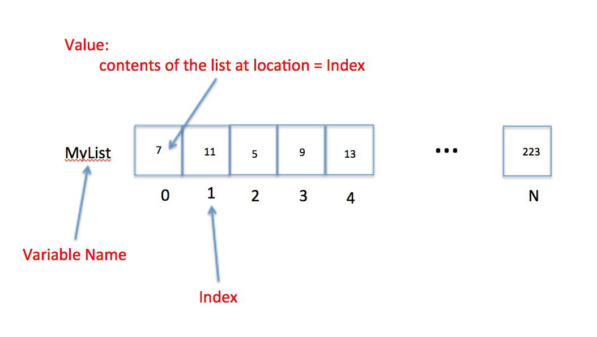
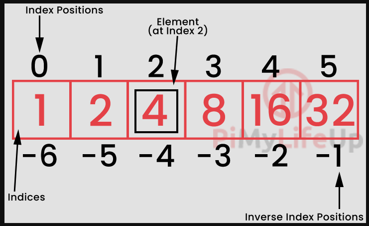
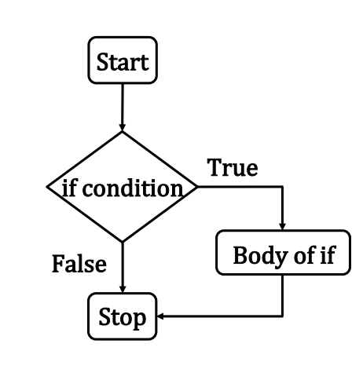

%%html
<!-- Script Block to set tables to left alignment -->
<style>
table {margin-left: 0 !important;}
</style>
ENGR 1330 Computational Thinking with Data Science
Last GitHub Commit Date: 25 January 2021
Lesson 2 Data Structures and Conditional Statements:
- Data structures; lists, arrays, tuples, sets, dictionaries
- Name, index, contents; keys
- Conditional structures; logical compares, block and in-line if
Objectives
1) Develop awareness of data structures available in Python to store and manipulate data - Implement arrays (lists), dictionaries, and tuples - Address contents of lists , dictionaries, and tuples
2) Develop awareness of decision making in Python - Implement decision making in Python using using if-then ... conditional statements
Data Structures and Conditional Statements
Computational thinking (CT) concepts involved are:
Decomposition: Data interpretation, manipulation, and analysis of NumPy arraysAbstraction: Data structures; Arrays, lists, tuples, sets, and dictionariesAlgorithms: Conditional statements
What is a data structure?
Data Structures are a specialized means of organizing and storing data in computers in such a way that we can perform operations on the stored data more efficiently.
In our iPython world the structures are illustrated in the figure below

Lists
A list is a collection of data that are somehow related. It is a convenient way to refer to a collection of similar things by a single name, and using an index (like a subscript in math) to identify a particular item.
Consider the "math-like" variable below:
The variable name is and the subscripts correspond to different values.
Thus the value of the variable named associated with subscript is the number .
The figure below is a visual representation of a the concept that treats a variable as a collection of cells.

In the figure, the variable name is MyList, the subscripts are replaced by an index
which identifies which cell is being referenced.
The value is the cell content at the particular index.
So in the figure the value of MyList at Index = 3 is the number 9.'
In engineering and data science we use lists a lot - we often call then vectors, arrays, matrices and such, but they are ultimately just lists.
To declare a list you can write the list name and assign it values. The square brackets are used to identify that the variable is a list. Like:
MyList = [7,11,5,9,13,66,99,223]
One can also declare a null list and use the append() method to fill it as needed.
MyOtherList = [ ]
Python indices start at ZERO. A lot of other languages start at ONE. It's just the convention.
The first element in a list has an index of 0, the second an index of 1, and so on. We access the contents of a list by referring to its name and index. For example
MyList[3] has a value of the number 9.
Arrays
Arrays are lists that are used to store only elements of a specific data type - Ordered: Elements in an array can be indexed - Mutable: Elements in an array can be altered

Data type that an array must hold is specified using the type code when it is created - ‘f’ for float - ‘d’ for double - ‘i’ for signed int - ‘I’ for unsigned int
More types are listed below
| Type Code | C Data Type | Python Data Type | Minimum Size in Bytes |
|---|---|---|---|
| 'b' | signed char | int | 1 |
| 'B' | unsigned char | int | 1 |
| 'h' | signed short | int | 2 |
| 'H' | unsigned short | int | 2 |
| 'i' | signed int | int | 2 |
| 'I' | unsigned int | int | 2 |
| 'l' | signed long | int | 4 |
| 'L' | unsigned long | int | 4 |
| 'q' | signed long long | int | 8 |
| 'Q' | unsigned long long | int | 8 |
| 'f' | float | float | 4 |
| 'd' | double | float | 8 |
To use arrays, a library named ‘array’ must be imported
import array
Creating an array that contains signed integer numbers
myarray = array.array('i', [1, 2, 4, 8, 16, 32])
myarray[0] #1-st element, 0-th position
1
import array as arr #import using an alias so the calls dont look so funny
myarray = arr.array('i', [1, 2, 4, 8, 16, 32])
myarray[0] #1-st element, 0-th position
1
Lists: Can store elements of different data types; like arrays they are (arrays are lists, but lists are not quite arrays!) - Ordered: Elements in a list can be indexed - Mutable: Elements in a list can be altered - Mathematical operations must be applied to each element of the list
Tuple - A special list
A tuple is a special kind of list where the values cannot be changed after the list is created.
Such a property is called immutable
It is useful for list-like things that are static - like days in a week, or months of a year.
You declare a tuple like a list, except use round brackets instead of square brackets.
MyTupleName = ("Jan","Feb","Mar","Apr","May","Jun","Jul","Aug","Sep","Oct","Nov","Dec")
Tuples are often created as output from packages and functions.
Dictionary - A special list
A dictionary is a special kind of list where the items are related data PAIRS.
It is a lot like a relational database (it probably is one in fact) where the first item in the pair is called the key, and must be unique in a dictionary, and the second item in the pair is the data.
The second item could itself be a list, so a dictionary would be a meaningful way to build a
database in Python.
To declare a dictionary using curly brackets
MyPetsNamesAndMass = { "Dusty":7.8 , "Aspen":6.3, "Merrimee":0.03}
To declare a dictionary using the dict() method
MyPetsNamesAndMassToo = dict(Dusty = 7.8 , Aspen = 6.3, Merrimee = 0.03)
Dictionary properties - Unordered: Elements in a dictionary cannot be - Mutable elements: Elements in a dictionary can be altered - Immutable keys: Keys in a dictionary cannot be altered
Sets - A special list
Sets: Are used to store elements of different data types - Unordered: Elements in a set cannot be indexed - Mutable: Elements in a set can be altered - Non-repetition: Elements in a set are unique
Elements of a set are enclosed in curly brackets { } - Creating sets that contains different data types - Sets cannot be nested
What's the difference between a set and dictionary?
From https://stackoverflow.com/questions/34370599/difference-between-dict-and-set-python
"Well, a set is like a dict with keys but no values, and they're both implemented using a hash table. But yes, it's a little annoying that the {} notation denotes an empty dict rather than an empty set, but that's a historical artifact."
Conditional Statements
Decision making via conditional statements is an important step in algorithm design; they control the flow of execution of a program.
Conditional statements in Python include:
ifstatementif....elsestatementsif....elif....elsestatements
Conditional statements are logical expressions that evaluate as TRUE or FALSE and using these results to perform further operations based on these conditions. All flow control in a program depends on evaluating conditions. The program will proceed diferently based on the outcome of one or more conditions - really sophisticated AI programs are a collection of conditions and correlations.
Expressed in a flowchart a block if statement looks like:

As psuedo code:
if(condition is true):
do stuff
Amazon knowing what you kind of want is based on correlations of your past behavior compared to other peoples similar, but more recent behavior, and then it uses conditional statements to decide what item to offer you in your recommendation items. It's spooky, but ultimately just a program running in the background trying to make your money theirs.
Comparison
The most common conditional operation is comparison. If we wish to compare whether two variables are the same we use the == (double equal sign).
For example x == y means the program will ask whether x and y have the same value. If they do, the result is TRUE if not then the result is FALSE.
Other comparison signs are != does NOT equal, < smaller than, >larger than, <=less than or equal, and >= greater than or equal.
There are also three logical operators when we want to build multiple compares
(multiple conditioning); these are and, or, and not.
The and operator returns TRUE if (and only if) all conditions are TRUE.
For instance 5 == 5 and 5 < 6 will return a TRUE because both conditions are true.
The or operator returns TRUE if at least one condition is true.
If all conditions are FALSE, then it will return a FALSE. For instance 4 > 3 or 17 > 20 or 3 == 2 will return TRUEbecause the first condition is true.
The not operator returns TRUE if the condition after the not keyword is false. Think of it
as a way to do a logic reversal.
Block if statement
The if statement is a common flow control statement.
It allows the program to evaluate if a certain condition is satisfied and to perform a designed action based on the result of the evaluation. The structure of an if statement is
if condition1 is met:
do A
elif condition 2 is met:
do b
elif condition 3 is met:
do c
else:
do e
The elif means "else if". The : colon is an important part of the structure it tells where the action begins. Also there are no scope delimiters like (), or {} .
Instead Python uses indentation to isolate blocks of code.
This convention is hugely important - many other coding environments use delimiters (called scoping delimiters), but Python does not. The indentation itself is the scoping delimiter.
Inline if statement
An inline if statement is a simpler form of an if statement and is more convenient if you
only need to perform a simple conditional task.
The syntax is:
do TaskA `if` condition is true `else` do TaskB
An example would be
myInt = 3
num1 = 12 if myInt == 0 else 13
num1
An alternative way is to enclose the condition in brackets for some clarity like
myInt = 3
num1 = 12 if (myInt == 0) else 13
num1
In either case the result is that num1 will have the value 13 (unless you set myInt to 0).
One can also use if to construct extremely inefficient loops.
Readings
-
Computational and Inferential Thinking Ani Adhikari and John DeNero, Computational and Inferential Thinking, The Foundations of Data Science, Creative Commons Attribution-NonCommercial-NoDerivatives 4.0 International (CC BY-NC-ND) Chapter 4 Subpart 3 https://www.inferentialthinking.com/chapters/04/3/Comparison.html
-
Computational and Inferential Thinking Ani Adhikari and John DeNero, Computational and Inferential Thinking, The Foundations of Data Science, Creative Commons Attribution-NonCommercial-NoDerivatives 4.0 International (CC BY-NC-ND) Chapter 4 https://www.inferentialthinking.com/chapters/04/Data_Types.html
-
Learn Python the Hard Way (Online Book) (https://learnpythonthehardway.org/book/) Recommended for beginners who want a complete course in programming with Python.
-
LearnPython.org (Interactive Tutorial) (https://www.learnpython.org/) Short, interactive tutorial for those who just need a quick way to pick up Python syntax.
# Script block to identify host, user, and kernel
import sys
! hostname
! whoami
! pwd
print(sys.executable)
print(sys.version)
print(sys.version_info)
ip-172-26-4-2
compthink
/home/compthink/engr-1330-webroot/1-Lessons/Lesson03/OriginalPowerpoint
/opt/jupyterhub/bin/python3
3.8.5 (default, Jul 28 2020, 12:59:40)
[GCC 9.3.0]
sys.version_info(major=3, minor=8, micro=5, releaselevel='final', serial=0)